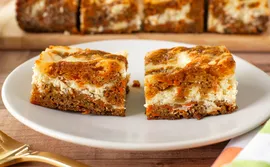

Carrot Cake Cheesecake Bars

This tiger chicken technique is the best way to roast chicken leg quarters, a very popular cut of chicken. The skin is crispy and the meat comes out tender, succulent, and beautifully seasoned. Along with the fastest, best, tastiest pan sauce ever, you are in for an exceptional bite of chicken.
- 2 cups all-purpose flour
- 1 cup granulated sugar
- 1/2 cup butter, softened
- 1 cup cream cheese
- 2 large eggs
- 1 cup grated carrots
- 1/2 cup chopped walnuts
Steps
- Place butter in a light-colored saucepan over medium-low heat. Cook, stirring constantly, until little browned bits begin to form in the bottom of the pan and turn an amber color, 5 to 10 minutes. Pour into a large mixing bowl and set aside to cool for 15 minutes.
- Preheat the oven to 350 degrees F (180 degrees C). Line an 8x8-inch square pan with enough parchment paper to have overhang on all sides.
- For cheesecake filling, beat cream cheese, white sugar, egg, lemon juice, 1 teaspoon vanilla, and pinch of salt together with an electric mixer until completely smooth and combined. Set aside.
- For carrot cake, to cooled browned butter, add brown sugar, ginger, cinnamon, 1/2 teaspoon salt, nutmeg, and allspice and whisk until thoroughly incorporated, about 1 minute. Add egg and 1 1/2 teaspoons vanilla and whisk until thoroughly smooth and combined. Add flour and baking soda and mix until just incorporated. Stir in grated carrots.
- Place about 1/2 the carrot cake batter into the pan and smooth into an even layer (it will be a somewhat thin layer). Pour cheesecake filling over the top of the carrot cake layer. Place dollops of remaining carrot cake batter over the cheesecake filling. Use a butter knife to swirl the layers together a few times, taking care not to go all the way to the bottom of the pan. Tap pan on the counter several times to help the batter resettle into an even layer.
- Bake in the preheated oven until bars are puffed and have only a slight jiggle in the center, 40 to 45 minutes. Allow bars to cool to room temperature, then refrigerate until completely chilled, at least 4 hours.
- Remove bars from pan using the parchment overhang. Carefully peel off parchment paper. Run a sharp knife under hot water, then dry it off on a towel. Use the hot knife to cut the bars into 16 servings. Wipe off the knife as needed between cuts. Keep extra bars stored in the refrigerator.
home